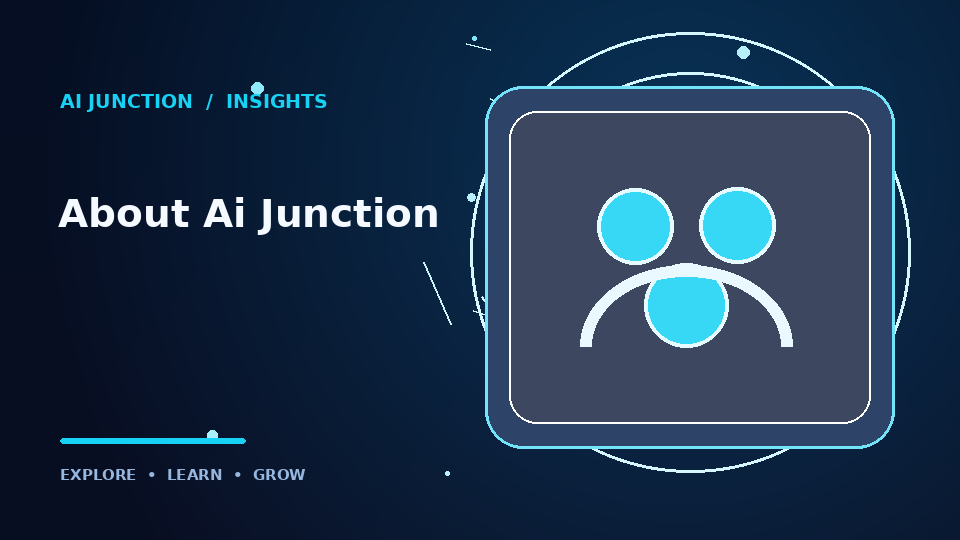
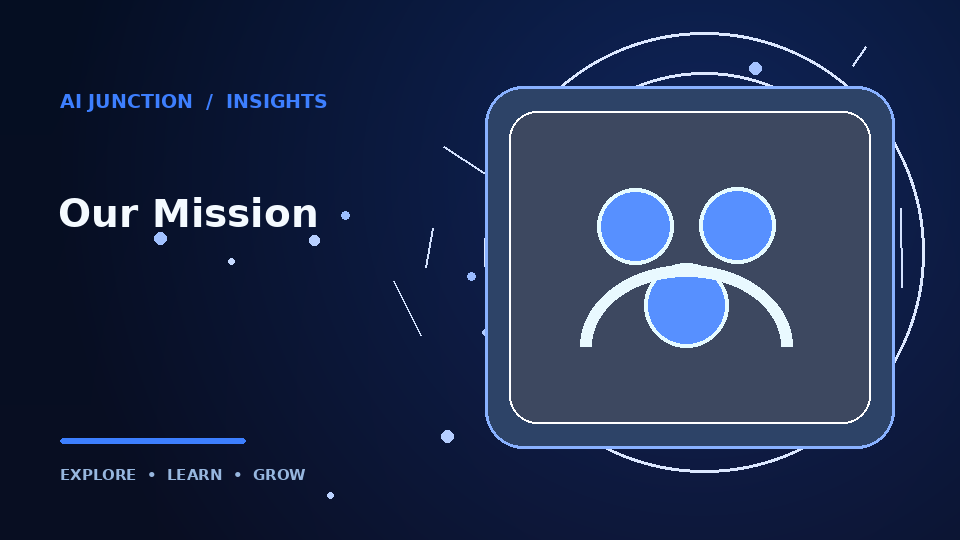
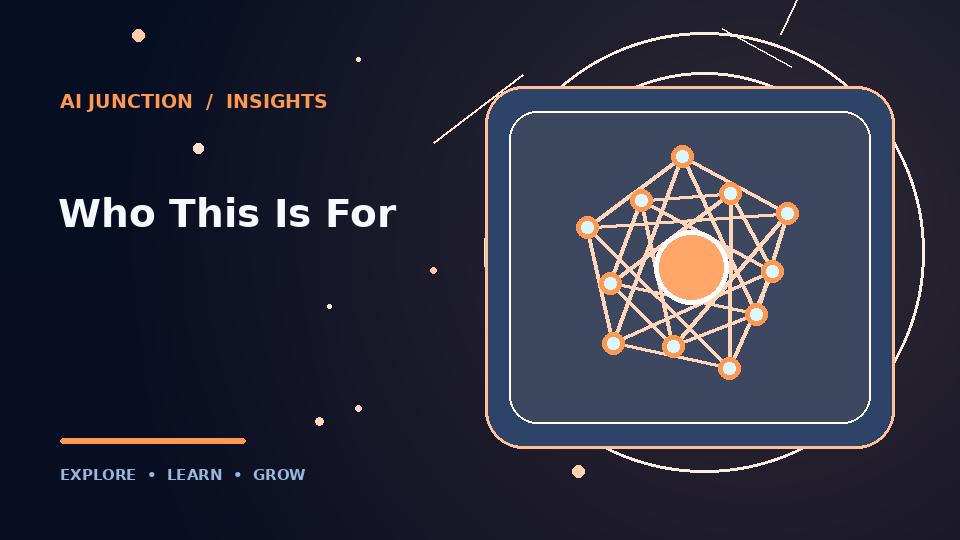

Technology feels complex.
Learning should not.
AI Junction is a practical learning initiative focused on making AI tools, digital skills and useful automation easier to understand.


Why AI Junction exists
AI changes quickly. New tools appear every week, but beginners often need clear explanations more than another long list of products.
Our goal is to explain what tools do, where they help, and how to evaluate their results responsibly.
What guides our work
Three principles shape the content and projects we share.
Clarity first
Simple language, practical examples and no unnecessary jargon.
Real-world usefulness
Tools and workflows that can help with everyday tasks.
Responsible exploration
We encourage checking accuracy, costs, privacy and tool terms.

Who we create for
Students and beginners discovering AI for the first time.
Content creators looking for better research and production workflows.
Small businesses and independent professionals exploring simple automation.
Learn with us
Follow AI Junction for bite-sized ideas and AI Unboxed for video-led learning.